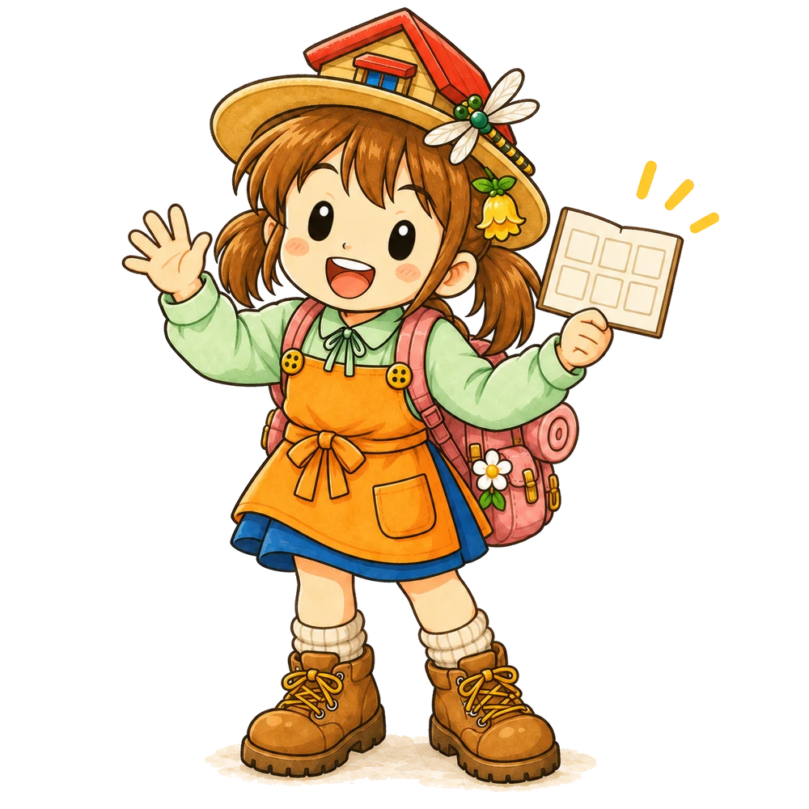
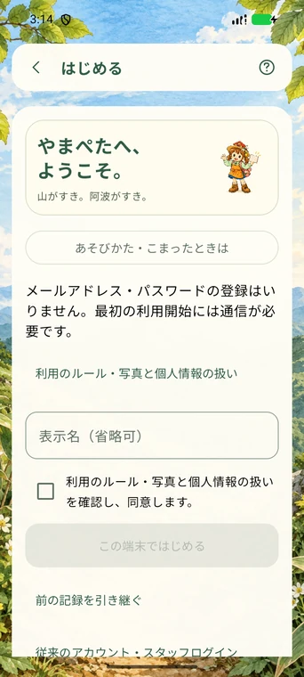
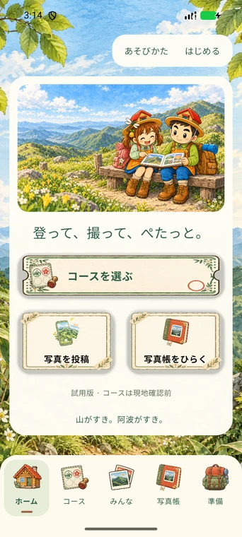
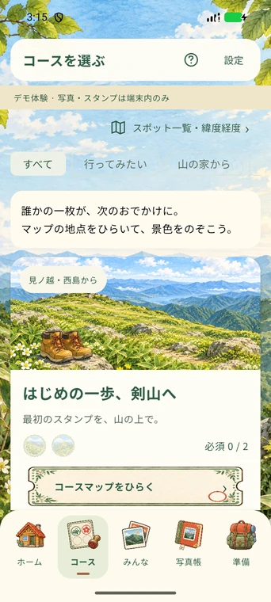
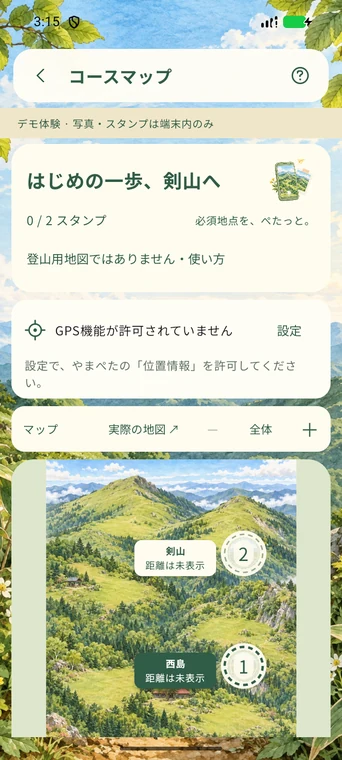
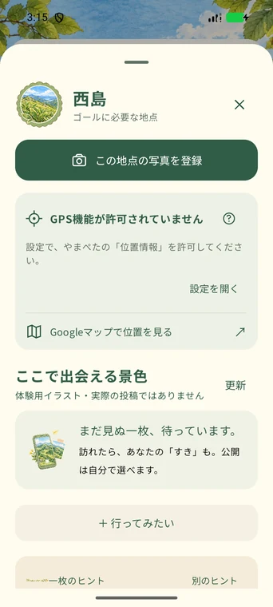
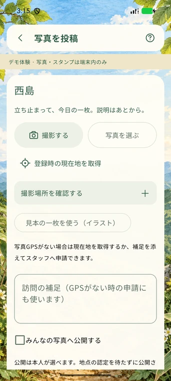
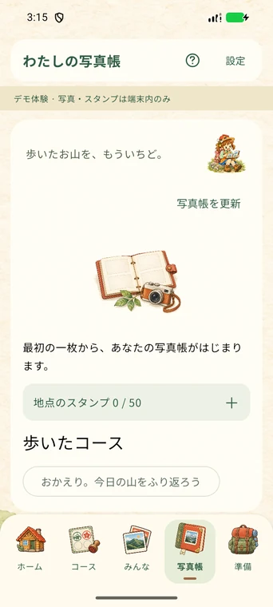
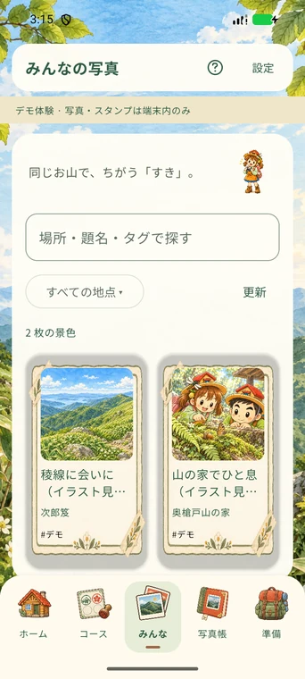
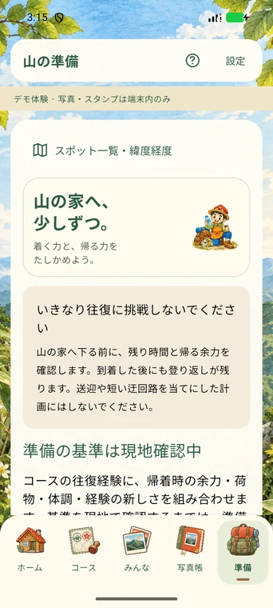

やまぺた
使い方ガイド
知りたいことから、ひとつずつ。
項目を押すと手順がひらきます。

①アプリを入れる → ②通信できる場所で設定 → ③短いコースで一枚。
最初の一枚までを、まとめて読む ↗全18項目
画面例はAndroidです。iPhoneでは写真を選ぶ画面などが異なります。現在は招待制のテスト版です。
01まず一枚、ぺたっと現地で一枚送って、スタンプを見よう
最初は通信できる場所で、短いお試しコースを選びましょう。すでに参加案内からインストール済みの方は、下の手順から始められます。
- ホーム右上の「はじめる」を押します。利用のルールを読み、同意して「この端末ではじめる」を押します。
- ホームの「コースを選ぶ」から、「山以外のお試し」を選びます。
- 一覧の「最新のコースを端末に保存」を押して準備し、目的のコースの「コースマップをひらく」を押します。
- 現地でマップの印を押し、「この地点の写真を登録」へ進みます。
- 安全な場所で「撮影する」。写真にGPSがない場合は、その地点にいる間に「登録時の現在地を取得」を押します。
- 公開するかを選び、写真の権利・個人情報の確認にチェック。「写真を送信」を押します。
- 「写真帳」で写真と結果を確認します。「地点の確認済み」になれば、マップにスタンプがつきます。
先に覚える3つのこと
| 表示・状態 | 意味 |
|---|---|
| 写真がある | 写真を保存・送信した状態。スタンプ認定とは別です |
| スタンプがある | その地点への訪問が確認された状態です |
| 必須スタンプが全部ある | コースのスタンプ集めが完成。登山の安全・往復体力の保証ではありません |
次は02～04で、インストールと出発前の準備を確認してください。
02アプリを入れる・更新するAndroid・iPhoneの参加方法
現在は内部テストです。参加対象として登録された方だけがインストールできます。ストアで名前を検索して見つからなくても、故障ではありません。
Android
- 主催者から参加対象にしてもらったGoogleアカウントを使います。
- Play内部テストの参加ページを開きます。
- テストへの参加操作を行い、案内に従ってGoogle Playからインストールします。
- 更新時も同じGoogle Playのページを使います。更新のためにアンインストールする必要はありません。
Android 8.0以降が対象です。参加できないときは、Google Playとブラウザーで、招待されたGoogleアカウントを使っているか確認してください。
iPhone
- 主催者が登録したAppleアカウント宛てのTestFlight招待を開きます。
- 案内に従ってAppleの「TestFlight」をインストールします。
- 招待を受け入れ、TestFlight内の「やまぺた」をインストールします。
- 更新もTestFlight内で行います。
iOS 15.0以降が対象です。招待が見つからない場合は、参加案内を受け取った窓口へ連絡してください。
旧試用APKを使っていた方
以前の試用版とPlay配布版は別アプリの場合があり、端末内の記録が自動で移るとは限りません。元のアプリを消す前に、送信待ち・元写真・引き継ぎ方法を確認してください。
03最初の設定をするメール登録なしで利用を始める
ホーム右上「はじめる」から設定を開きます。最初の利用開始にはインターネット接続が必要です。
- 「利用のルール・写真と個人情報の扱い」を読みます。
- 表示名を入れます。省略もできます。公開時に人に見られてもよい名前を使ってください。
- 内容を確認して、同意のチェックを入れます。
- 「この端末ではじめる」を押します。
メール登録・パスワード作成は不要です。アプリがこの端末の利用者として記録を持ちます。以前の記録がある方は、新しく始めず「前の記録を引き継ぐ」を使います。
まず操作だけ練習する場合
「通信なしでデモ体験」を使えます。デモの写真とスタンプは端末内だけに保存され、オンラインへ公開されません。通常利用の記録へ移る機能ではありません。
実際に公開・共有する場合は、設定で「デモを終える」から通常の利用開始へ進んでください。
操作ガイドをもう一度見る
右上の「？」または設定の「あそびかた・こまったときは」から、はじめてガイドと困ったときの案内を開けます。実際に出かけて撮った写真を登録し、訪問が確認できるとスタンプが付きます。子どもと使うときは、大人が公開範囲と安全を一緒に確認してください。

操作はアプリで行ってください
04出発前に準備する通信のある場所で済ませておくこと
通信できるうちに
- 利用開始を済ませる。
- 「コースを選ぶ」を開き、「最新のコースを端末に保存」を押す。地点数・コース数を保存した案内が出ることを確認する。
- 目的のコースを一度開く。絵のマップと地点名が見えることを確認する。
- 設定の「記録を同期する」で、自分の写真・スタンプを更新する。
- 設定から引き継ぎコードを作り、端末の外にも保管する。詳しくは16。
- カメラ、写真、位置情報を使うときに出る許可を確認する。
圏外でできること・できないこと
| 操作 | 圏外での扱い |
|---|---|
| 保存済みコース・地点・イラストマップを見る | 使えます |
| 現在地から地点までの距離を見る | 端末が位置を取得できれば使えます。通信なしで必ず測位できるという意味ではありません |
| 写真を撮る・下書きにする | 使えます |
| 送信操作をする | 結果未確認の写真は送信待ちに残ります |
| スタンプの新しい認定・季節解放の確定 | 接続後にサーバーで確認します |
| みんなの写真を見る・公開範囲を変更する | 通信が必要です |
| 自分の過去写真を見る | 端末に残っている写真は見られます。全写真の保存は保証しません |
| Googleマップを開く | 地図側の通信・保存状態にも依存します |
やまぺたは登山用地図ではありません。 登山用地図、現在の通行状況、帰りの時間、充電・通信手段は別に準備しましょう。最初の設定は、出発前に通信できる場所で済ませてください。
05ホームとメニューを覚えるホームの3つの入口と、下のメニュー
ホームには、よく使う3つの入口があります。
| ボタン | できること |
|---|---|
| コースを選ぶ | 目的のコースからマップ・地点を開く |
| 写真を投稿 | 地点を選んで写真を登録する |
| 写真帳をひらく | 自分の写真、送信待ち、スタンプを見る |
画面下には「ホーム」「コース」「みんな」「写真帳」「準備」が並びます。コースや写真の詳細を開くと、下のメニューではなく上の戻る操作で元の画面へ戻ります。
右上の入口
「設定」では、記録の同期・引き継ぎ・音・削除相談を扱います。「？」は遊び方です。利用開始前は「設定」の代わりに「はじめる」が表示されます。
画面の上に案内が出たら
送信結果や通信状態などが文章で表示されます。内容を読んでから「閉じる」を押してください。写真が消えたように見える場合も、新規登録やアプリ削除をする前に、表示内容と写真帳の送信待ちを確認します。

操作はアプリで行ってください
06コースを選び、マップを開く行きたいコースと地点を選ぶ
「コースを選ぶ」から、気になるコースの「コースマップをひらく」を押します。
- 「すべて」：すべてのコース。
- 「行ってみたい」：しおりを付けた地点があるコース。
- 「山の家から」：山の家を起点にするコース。
- 「山以外のお試し」：沖浜、あなん、月見ヶ丘、あすたむ、どうぶつ園の体験コース。
コースの題名・必須スタンプ数を見て選びます。施設のお試しコースは、コース詳細から公式案内も確認してください。
必須とオプション
「必須」は全部集めるとスタンプ集めが完成する地点。「オプション」は好きなときに立ち寄れる地点です。オプションがないコースもあります。
通常スタンプは地点ごとに共通です。別コースで取った同じ地点のスタンプも表示されます。これまでの複数のお出かけで集めることができ、全地点を一日で歩いた証明ではありません。
地点名・緯度経度から探す
コース一覧上部の「スポット一覧・緯度経度」を開くと、コースをまたいで地点を探せます。利用者がその場で座標を書き換える画面ではありません。位置がおかしい場合は地点名を控えて主催者に知らせてください。

操作はアプリで行ってください
07距離と、光る印の見方距離が出ない・光らないときにも
コースマップで印を押すと、地点の詳細が開きます。「必須地点を、ぺたっと。」を目安に集めます。マップは拡大・縮小や「全体」で見やすくできます。
現在地を使う
位置情報の案内から「現在地を使う」などの取得操作を行い、端末の許可画面でアプリの使用中の位置情報を許可します。Androidの位置権限、iPhoneの位置情報サービスの設定名はOSによって異なります。
「GPS機能が許可されていません」と出たら「設定を開く」から、やまぺたの位置情報を確認します。許可したあとアプリに戻り、もう一度位置の確認を行います。
距離・光は目安です
表示は地点までの直線距離です。道のり・所要時間・標高差ではありません。「範囲内（目安）」になると、印が光るなど近さが分かります。
光っても自動でスタンプが付くわけではありません。写真投稿後に、写真のGPSなどを使って認定します。GPSの誤差が大きいと「境界付近」「精度が不足」になります。印を光らせるために道を外れないでください。
実際の地図を見る
「実際の地図」または地点の「Googleマップで位置を見る」を押します。現在地と地点の位置を外部の地図で確認できます。Googleマップが示す徒歩経路も、登山道の安全・通行可否の保証にはなりません。

操作はアプリで行ってください
08地点に着いたら、写真を登録する一番上の写真登録ボタンから
- マップで地点の印を押します。
- 地点名が合っていることを確認します。
- 上部の「この地点の写真を登録」を押します。
- 「撮影する」または「写真を選ぶ」を押します。
撮影・操作は必ず安全な場所で立ち止まって行います。道や施設の利用者の邪魔にならない場所を選んでください。
その場所の景色も見られます
地点の下には「ここで出会える景色」があります。公開写真を横にめくり、タップすると大きく見られます。まだ投稿のない地点もあります。
「行ってみたい」を押すとしおりが付きます。コース一覧の「行ってみたい」から再び探せます。しおりは端末・利用者ごとの保存で、機種変更時の同期対象ではありません。
スタンプがある地点で再び撮る
取得済みの地点から自分の写真が開く場合は、写真詳細の「この地点に新しい写真を登録」を使います。同じ地点でも季節が違えば別の写真枠です。
まだ写真がない地点には、あなたの一枚を。自分の投稿結果は「写真帳」で確認できます。

操作はアプリで行ってください
09公開範囲を選び、送信するGPS・公開範囲・送信前の確認
選んだ写真と撮影日時を画面で確認します。写真はアプリ内で軽くしてから送ります。選択元の写真を書き換える処理ではありません。
場所の確認方法
写真にGPSが入っていれば、その位置を優先します。GPSがない場合は、その地点にいる間に「登録時の現在地を取得」を押してください。撮影後すぐに行うと、圏外から後で送る場合にも役立ちます。
位置を取得できなければ、「訪問の補足」に訪れた日や現地の状況を入れます。写真の保存後、写真詳細からスタッフへ地点確認を申請できます。
送信前の確認
- 「みんなの写真へ公開する」をオン／オフから選ぶ。最初はオフです。
- 写真を投稿する権利があること、人の顔・名前・住所などや迷惑な内容がないことを確認する。
- 権利・個人情報の確認欄にチェックを入れる。
- 「写真を送信」を押す。同じ季節の写真がある場合は更新ボタンになります。
公開を選ぶと、地点の認定を待たず原則公開されます。公開用画像からGPSなどの付加情報は除きますが、写っている景色や投稿地点から場所が分かることはあります。
送信しない場合は「送らずに下書き保存」。文章は後からで構いません。送信後は次の10で結果を確認してください。

操作はアプリで行ってください
10送信結果とスタンプを確認する写真があるのにスタンプがないとき
「写真帳」を開いて自分の写真を押すと、地点の確認状況が分かります。通信後も古い表示なら「写真帳を更新」または設定の「記録を同期する」を押します。
| 表示・状態 | 次にすること |
|---|---|
| 下書き | まだ送信していません。同じ地点の投稿画面を開き、続きを送ります |
| 送信待ち | 送信完了を確認できていません。通信が戻ったら写真帳の「再送する」を押します |
| 地点の確認済み | スタンプが付きます。コースマップで確認します |
| 地点の確認待ち | 写真は保存されています。位置が分からなかった場合などに表示されます |
| 地点の再確認が必要です | 写真詳細の補足を読み、必要な情報を添えて再申請します |
| スタッフが掲載を停止しています | 通常の非公開とは別です。勝手に写真を替えても解除されません |
場所を確認してもらう
写真詳細で「スタッフ申請の補足」に訪問日時、現地の目印、GPSを取れなかった事情を書き、「地点の確認を申請」を押します。申請しただけでは認定されません。
写真の日時がおかしい場合
「撮影日時の確認・訂正を申請」を開き、日本時間の撮影日時と確認できる補足を入れます。例：2026-09-29T10:30:00。自分で好きな季節へ変更する機能ではありません。
確認待ちが続くとき
確認には時間がかかることがあります。急ぐ場合は、参加案内を受け取った窓口に、利用者ID・地点名・画面に出ている状態を知らせてください。
11圏外・通信失敗のあとにすること下書きと送信待ちから再開する
写真を送る操作は、同じ写真の結果を繰り返し確認できる仕組みです。通信が切れたとき、同じ写真を新しく何度も投稿し直す必要はありません。
- 通信のある場所へ移動します。
- 写真帳の「送信待ち」を確認します。
- 「再送する」を押します。
- 写真帳を更新し、写真・公開範囲・地点の確認状況を見ます。
「写真を残して下書きに戻す」が出たら
写真がすでに更新されている、容量や内容に問題がある、などの理由が表示されます。理由を読み、このボタンで写真を残します。同じ地点の投稿画面で内容を直して送ります。
結果がまだ分からない写真にはこの操作が出ないことがあります。その場合は、まず同じ送信待ちの再送で結果を確かめます。
「送信待ちを取り消す」の注意
取り消すのは端末側の送信待ちです。サーバーに写真が届き、返事だけが届かなかった場合、受信済みの写真は残ることがあります。接続後に写真帳を確認し、必要なら写真そのものを削除してください。
送信待ちは10枚までです。端末保存量にも上限があるため、たまったら先に送信してください。未送信の写真がある間は、アプリの削除・データ消去・機種変更を避けます。
12写真帳を整える・写真を替える説明・タグ・公開範囲・写真の更新
写真帳で自分の写真を押すと、説明や公開範囲を変えられます。
説明とタグ
- 題名：40文字まで。
- 説明：500文字まで。
- タグ：空白で区切って5つまで。例えば「青空 稜線 花」。
入力後に「説明とタグを保存」を押します。写真を撮った現地で、すべて入力する必要はありません。
公開・非公開を変える
「みんなの写真へ公開」を切り替えます。通信して変更が受け付けられたことを確認します。非公開でも自分の写真帳や獲得済みスタンプは残ります。
新しい一枚に更新する
「この地点に新しい写真を登録」を押して写真を選びます。同じ地点・同じ季節の枠は一枚です。同じ枠へ投稿すると前の写真を置き換えます。撮影日が確認できない写真は、別の「撮影日未確認」枠になります。
他の季節の写真と通常の獲得済みスタンプは残ります。旧写真に付いたいいねや紹介は、新しい写真へ引き継ぎません。元の写真を全部残したい場合は、端末の写真アプリでも保管してください。

操作はアプリで行ってください
13みんなの写真を楽しむ・困る投稿を避ける景色を探す・いいね・通報と非表示
下の「みんな」から「みんなの写真」を開きます。閲覧には利用開始と通信が必要です。公開範囲の変更を確かめるため、他の人の写真は圏外用には保存しません。
景色を探す
「場所・題名・タグで探す」に言葉を入れ、地点を選び、「この条件で探す」を押します。一覧は24枚ずつです。「次の24枚」「前へ」でページを移動します。
写真を押すと大きく見られます。気に入ったら「いいね」。もう一度押すと取り消せます。コースマップの地点からも、その地点の写真へ入れます。
「今月の一枚」は、当月の公開写真から、他の人のいいね数などを使って最大3枚を表示します。スタッフの事前選考や、投稿の認定を意味する表示ではありません。
通報と非表示は別の操作
- 「この写真を通報する」：理由を書いて運営へ知らせます。通報だけで必ず即時削除されるわけではありません。
- 「この投稿者を非表示にする」：その投稿者の写真を自分の画面に表示しないようにします。
非表示の解除は「設定」内の「非表示にしている投稿者」から行えます。緊急の危険を伝えるための通報窓口ではありません。

操作はアプリで行ってください
14コース達成・季節のチャレンジ一度歩いたら、次の季節へ
通常のスタンプ集めは、コースの必須地点がそろうと完成です。オプションを全部集める必要はありません。写真を非公開にしていても認定対象になります。
一度完成したあと
対象コースで季節チャレンジを選べるようになります。まず通信して、初回の完成・解放が反映されたことを確認します。その後のお出かけで、新しい写真を撮ってください。
| 季節 | 日本時間の撮影月 |
|---|---|
| 春 | 3・4・5月 |
| 夏 | 6・7・8月 |
| 秋 | 9・10・11月 |
| 冬 | 12・1・2月。対応していないコースもあります |
認定される写真・されない写真
- 解放した日時より後に撮影し、地点と撮影日時が確認できた写真は対象です。
- 9月29日12時に解放したなら、同日10時に撮った写真は対象外です。午後にアップロードしても変わりません。
- 初回の完成に使った写真を、季節分へそのまま持ち越しません。
- 日時が読めない写真は、季節を自由入力して確定せず、日時の確認を申請します。
- タグに「春」と書いても季節の認定条件は変わりません。
通常スタンプと写真は、季節の挑戦を始めても消えません。ただし、写真の更新・日時訂正・認定の取り消しで季節側の表示が変わる場合があります。各コースで使える季節は、実際に表示される選択肢を確認してください。
15帰ったあと・山の準備・音の設定帰りの余力を残す・音を止める
写真帳または「準備」には「歩いたコース」があります。「おかえり。今日の山をふり返ろう」から記録します。
- 歩いたコース、歩いた日、帰着時刻を選ぶ・入力する。
- 「起点まで戻りました」を、実際に戻った場合だけ選ぶ。
- 帰着時の余力を1（ほぼなし）～4（十分あった）で選ぶ。
- 荷物・体調・補足を入れ、「ふり返りを保存」を押す。
保存結果が分からない場合は「前回の保存を再確認」を使います。自己申告だけでは、スタッフ確認済みの往復達成にはなりません。
山の家へいきなり挑戦しない
山の家に着いたあとにも、帰りの登り返しがあります。スタンプ数を、往復できる体力の判定として使わないでください。帰りの時間と余力を考え、自分に合った計画で歩きましょう。
公園のお試しコースは操作の練習です。山の家往復の準備経験には数えません。
音を変える
「設定」の「やまぺたの音」で音量やBGM、山ではまとめて消音する設定を確認できます。周囲の人や自然の音を優先し、必要に応じて消音で使ってください。音が出なくても写真やスタンプは使えます。

操作はアプリで行ってください
16機種変更・記録の引き継ぎ今の端末で、先に準備しておこう
端末を失ったあとからでは準備できないことがあります。記録が残っている今の端末で、先にコードを作ります。
古い端末ですること
- 未送信の下書き・送信待ちを送る。必要な元写真も保存する。
- 「設定」→「機種変更・引き継ぎの準備」を開く。
- 「引き継ぎコードを作る」を押して確認する。
- 表示されたコードを長押しでコピーし、端末の外にも安全に保管する。
コードを作り直すと、以前のコードは使えません。ほかの人に教えず、公開写真や相談欄へ貼り付けないでください。
新しい端末ですること
- アプリを入れ、通信できる場所で「はじめる」を開く。
- 「前の記録を引き継ぐ」を押し、保管したコードを入れる。
- 「記録を引き継ぐ」を押す。
- 写真・スタンプが戻ったことを確認し、新しくなったコードを保管する。
引き継ぐと古い端末からは操作できなくなります。端末内だけの下書き・未送信写真・しおりは移りません。
認証解除と退会の違い
「この端末の認証を解除する」は、サーバーの写真を残して、この端末からの利用を終える操作です。復旧方法を保存してから行います。
「退会とデータ削除」は記録を消す操作です。機種変更のために退会しないでください。端末と引き継ぎコードの両方を失うと、記録の復旧を保証できません。
17写真を消す・削除を相談する非公開・削除・削除相談の違い
自分の写真を削除する
「写真帳」→対象の写真→「写真を削除」→内容を確認して「削除する」。公開写真と説明を削除します。通常の地点スタンプは残ります。写真の削除は元に戻せません。
公開をやめたいだけなら、「みんなの写真へ公開」をオフにする方法もあります。まずどちらをしたいか選んでください。
端末紛失などで削除できないとき
「設定」または写真詳細の「写真が消せない・削除を相談する」から、次の情報を入れて「スタッフへ相談を送る」を押します。
- 写真ID、地点、投稿者名など、対象が分かる手がかり。
- 消したい写真と、削除できない事情。
引き継ぎコード、パスワード、身分証は送らないでください。相談を送っただけで自動削除はされません。スタッフが対象と事情を確認します。
アプリが使えない場合は、Webの削除相談ページから連絡できます。アプリ内にも「Webから削除を相談する」があります。
送ったあとは、受付結果の画面を控えておきましょう。返事を確認できない場合や急ぐ場合は、参加案内を受け取った窓口にも連絡してください。
すべての記録を削除する
設定の退会と削除の操作を使い、確認内容を読んで実行します。受付結果が分かる前にアプリを削除しないでください。公開停止と記録処理のあと、保存された画像・認証情報の消去を順次行います。操作の取り消しや記録の復旧はできません。
18困ったときの早見表困ったことから対処を探す
| 困ったこと | まず確認すること |
|---|---|
| 利用開始できない | 通信、ルールの同意、表示された理由。短時間の利用開始が集中した場合は時間をおく。再インストールを繰り返さない |
| 距離が出ない | GPSの許可、端末全体の位置情報、現在地の再取得。一部地点だけならスタッフ確認の地点かを見る |
| 近くにいるのに光らない | 測位の精度・鮮度を確認。安全な場所で待つ。印へ向かって道を外れない |
| 光っているのに押印されない | 光は目安。写真を送ったか、写真GPSが別の場所でないか、確認待ちでないかを見る |
| 写真を選べない | 写真・カメラの権限、端末の空き容量、読み込める写真形式。別の写真でも試す |
| 送信ボタンを押せない | 写真を選んだか、写真の権利・個人情報の確認欄にチェックしたか |
| 送信後に写真がない | 写真帳の送信待ち、更新、通信状態。デモと通常利用を取り違えていないか |
| 写真が更新できない | 同じ地点・季節に送信待ちがないか。競合の案内なら再同期し、下書きへ戻して確認 |
| みんなの写真が見えない | 利用開始、通信、検索条件、非表示にした投稿者。公開を取り消された写真は見えません |
| 季節のスタンプが付かない | 解放時刻より後の撮影か、日時が確認済みか、そのコースで対応する季節か |
| 記録が消えたように見える | 別のアプリ・デモ・別利用者でないか。先に引き継ぎ方法を確認する |
| 元写真の保存に失敗した | Androidでアプリ内に残した写真の案内が出たら「元写真を保存」。アンインストール前に取り出す |
不具合を伝えるとき
Android／iPhone、アプリの版、起きた日時、コースと地点、押したボタン、表示された文を知らせます。必要なら個人情報を隠した画面を添えます。秘密のコードは送らないでください。
次のアクション： まず通信できる場所で利用を始め、身近なお試しコースで「一枚送る→公開範囲を見る→スタンプを見る」を試してください。
画面例はAndroidです。iPhoneでは写真選択や権限を許可する画面が異なります。参加条件や更新は、主催者からの最新案内を確認してください。
見つかりませんでした。「写真」「GPS」など短い言葉で試すか、クリアして一覧に戻ってください。